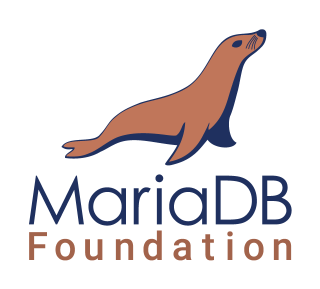
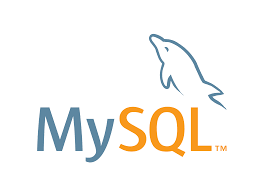
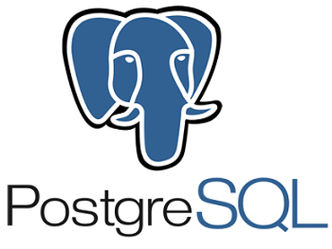

AnythingLLM
Self-hosted multi-user AI, RAG and agent workspace with persistent storage.
Dozzle
Dozzle is a small lightweight application with a web based interface to monitor Docker logs. It doesn’t store any log files. It is for live monitoring of your container logs only.

MariaDB
MariaDB Server is one of the most popular open source relational databases. It's made by the original developers of MySQL and guaranteed to stay open source

Milvus (External S3)
Milvus Standalone for CapRover with private etcd metadata and external S3-compatible storage for scalable vector data.
MinIO
MinIO is a cloud storage server compatible with Amazon S3

MongoDB
MongoDB is a cross-platform document-oriented database program. Classified as a NoSQL database program

MySQL
MySQL is a relational database management system based on SQL
n8n.io
Node based workflow automation tool
ntfy.sh
Send push notifications to your phone or desktop via PUT/POST
Ollama
Run language models locally with persistent model storage.
Open WebUI + Ollama
Self-hosted AI web interface with a private bundled Ollama backend.
Parse
Parse Server is an open source Backend-as-a-Service(BaaS) framework initially developed by Facebook
Portainer
Portainer is a lightweight management UI which allows you to easily manage your different Docker environments

PostgreSQL
The PostgreSQL object-relational database system provides reliability and data integrity
SearXNG
Privacy-respecting metasearch engine with persistent configuration and cache.
SiYuan
Privacy-first personal knowledge management with a persistent single-writer workspace.
SnappyMail
Lightweight self-hosted webmail client with persistent configuration and data.
Stalwart Mail Server
Modern, All-in-One Mail Server written in Rust (JMAP, IMAP, SMTP). Faster and lighter than Postal/Poste.io.
Vikunja
Open Source Task Management
Weaviate
AI-native vector database with persistent storage and secure-by-default API-key authentication.
WordPress
WordPress is a content management system based on PHP and MySQL that is usually used with the MySQL or MariaDB database